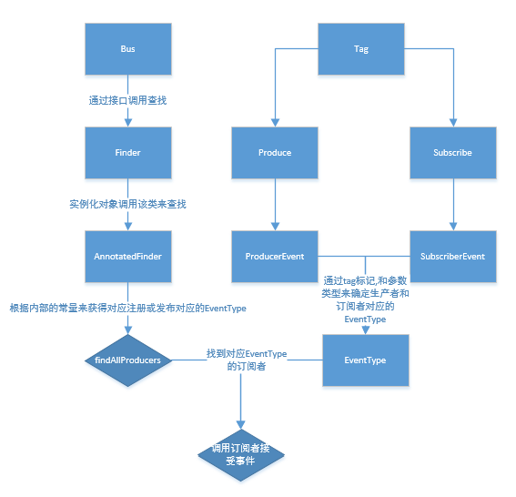

RxBus的简单流程图

类的简单分析
Produce 和 Subscribe
生产者和消费者的注解.两者除了名称不一样,使用方式都是一样.
有两个参数,
String[] 类型的 tag,用于对事件的类型进行标记
EventThread 类型的 thread,内部封装了Scheduler调度器,用于进行线程切换.
两者之前不同的是Subscribe作为一个订阅者,方法需要一个事件的参数.
而Produce作为生产者,需要返回一个类型作为事件参数
EventType
RxBus的核心类,决定了事件类型,生产者订阅者都以此为媒介来进行数据分发.
有两个关键参数
String 的 tag 即生产者和订阅者在定义时的标记
Class<?> 的 clazz 事件的参数类型,也就是生产者的返回类型,即订阅者的接收类型
此类重写了hashCode和equals方法,来确保事件的唯一性.
ProducerEvent 和 SubscriberEvent
同EventTy一样,同样重写了hashCode和equals方法,来确保唯一性.
两类主要参数相同.主要为三个参数.用于在register时通过反射拿到生产者或订阅者的信息,并储存到对应的对象中去,并且与EventType以键值对的形式进行保存.
Object 的 target 用于标示注册的对象.
Method 的 method 生产的方法,或订阅的方法
EventThread 的 thread 调用时的线程类型.
通过这三者信息,当Bus发送消息时通过EventType找到对应的值,就能通过反射调用其中的订阅方法,并将数据传递过去
RxBus
一个简单的工具类,提供了获取Bus的单例对象的方法.
Bus
核心的类,在该类中进行注册,取消注册,发布等等操作.
该类的构造函数并未私有,在创建其对象时需要注意其ThreadEnforcer
该对象有两个默认实现对象,限定了register和post等操作的线程.
Finder
抽象接口,两个抽象方法,用于查找Producers和Subscribers对象.
其默认内部实现类Finder.ANNOTATED
该类的实现很有意思,一般接口都是抽象让其他对象去集成,而这内部的实现类只是调用了AnnotatedFinder类的方法而已,AnnotatedFinder并没有实现Finder的接口.
AnnotatedFinder
该类是一个final类,通过静态方法实现了对Finder接口的查找对象的返回.
在register时,会调用该类,对注册对象进行反射解析,找到其生产者和订阅者,并以对象类型为Key以其找到的两个对象为value作为缓存储存在两个map集合中,防止无意义的重复注册